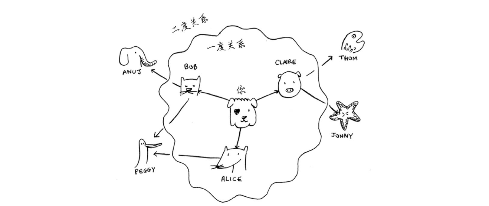
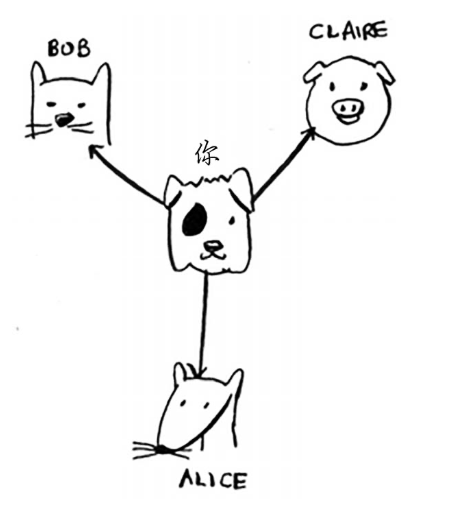
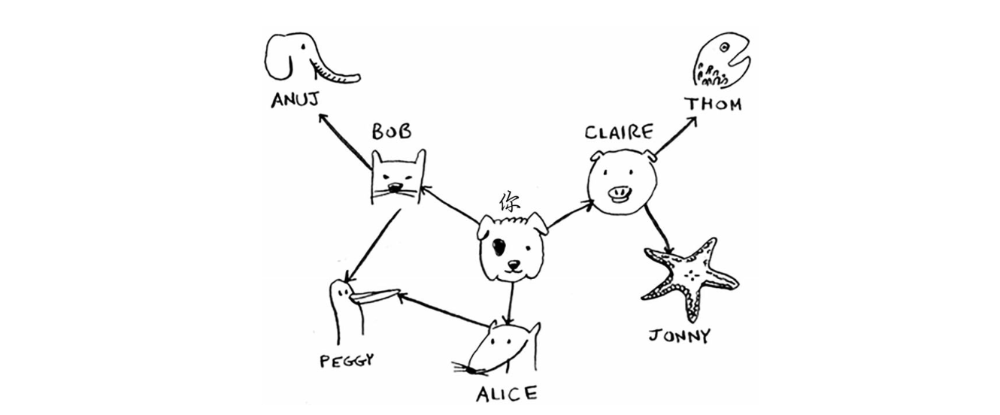
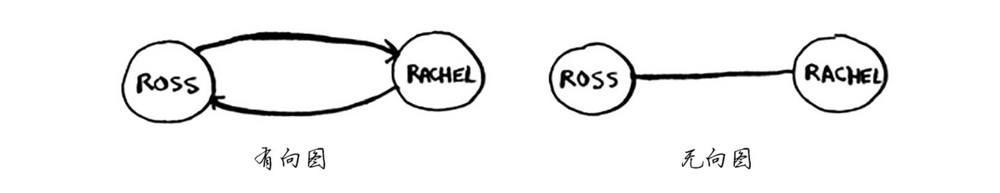
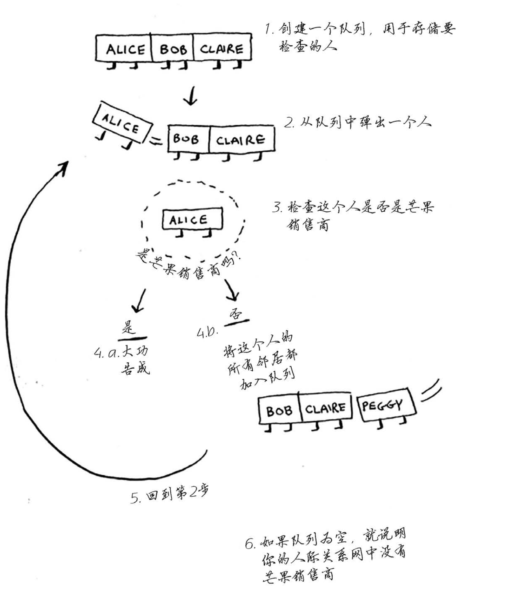

广度优先搜索让你能够找出两样东西之间的最短距离，不过最短距离的含义有很多!使用广度优先搜索可以:
解决最短路径问题的算法被称为广度优先搜索。
图模拟一组连接。图由节点(node)和边(edge)组成。
一个节点可能与众多节点直接相连，这些节点被称为邻居。
广度优先搜索是一种用于图的查找算法，可帮助 回答两类问题：
假设你经营着一个芒果农场，需要寻找芒果销售商，以便将芒果卖给他。你的目标是在你的人际 关系网中找到一位芒果销售商。因此，如果 Alice 不是芒果销售商，就将其朋友也加入到名单中。这意味着你将在她的朋友、朋友的朋友等中查找。使用这种算法将搜遍你的整个人际关系网，直到找到芒果销售商。这就是广度优先搜索算法。
谁是关系最近的芒果销售商。例如，朋友是一度关系，朋友的朋友是二度关系。

在你看来，一度关系胜过二度关系，二度关系胜过三度关系，以此类推。因此，你应先在一度关系中搜索，确定其中没有芒果销售商后，才在二度关系中搜索。广度优先搜索就是这样做的! 在广度优先搜索的执行过程中，搜索范围从起点开始逐渐向外延伸，即先检查一度关系，再检查二度关系。 顺便问一句:将先检查 Claire 还是 Anuj 呢?Claire 是一度关系，而 Anuj 是二度关系，因此将先检查 Claire，后检查 Anuj。
你也可以这样看，一度关系在二度关系之前加入查找名单。
你按顺序依次检查名单中的每个人，看看他是否是芒果销售商。这将先在一度关系中查找，再在二度关系中查找，因此找到的是关系最近的芒果销售商。广度优先搜索不仅查找从 A 到 B 的路径，而且找到的是最短的路径。
注意，只有按添加顺序查找时，才能实现这样的目的。 换句话说，如果 Claire 先于 Anuj 加入名单，就需要先检查 Claire，再检查 Anuj。如果 Claire 和 Anuj 都是芒果销售商，而你先检查 Anuj 再检查 Claire，结果将如何呢?找到的芒果销售商并非是与你关系最近的，因为 Anuj 是你朋友的朋友，而 Claire 是你的朋友。因此，你需要按添加顺序进行检查。有一个可实现这种目的的数据结构，那就是队列(queue)。
队列的工作原理与现实生活中的队列完全相同。 假设你与朋友一起在公交车站排队，如果你排在他前面，你将先上车。队列的工作原理与此相同。队列类似于栈，你不能随机地访问队列中的元素。队列只支持两种操作:入队和出队。
队列是一种先进先出(First In First Out，FIFO)的数据结构，而栈是一种后进先出(Last In First Out，LIFO)的数据结构。

可以用散列表来实现图。散列表让你能够将键映射到值。在这里，你要将节点映射到其所有邻居。
表示这种映射关系的 Python 代码如下：
graph = {} graph["you"] = ["alice", "bob", "claire"]
注意，“你”被映射到了一个数组，因此 graph["you"] 是一个数组，其中包含了“你”的所有邻居。
图不过是一系列的节点和边，因此在 Python 中，只需使用上述代码就可表示一个图。那像下面这样更大的图呢?

表示它的 Python 代码如下：
graph = {} graph["you"] = ["alice", "bob", "claire"] graph["bob"] = ["anuj", "peggy"] graph["alice"] = ["peggy"] graph["claire"] = ["thom", "jonny"] graph["anuj"] = [] graph["peggy"] = [] graph["thom"] = [] graph["jonny"] = []
Anuj、Peggy、Thom 和 Jonny 都没有邻居，这是因为虽然有指向他们的箭头，但没有从他们出发指向其他人的箭头。这被称为有向图(directed graph)，其中的关系是单向的。因此，Anuj 是 Bob 的邻居，但 Bob 不是 Anuj 的邻居。无向图(undirected graph)没有箭头，直接相连的节点互为邻居。例如，下面两个图是等价的。

先概述一下这种算法的工作原理。

首先，创建一个队列。在 Python 中，可使用函数 deque 来创建一个双端队列。
from collections import deque search_queue = deque() # 创建一个队列 search_queue += graph[name] # 将你的邻居加入到这个搜索队列中
别忘了，graph["you"] 是一个数组，其中包含你的所有邻居，如["alice", "bob", "claire"]。这些邻居都将加入到搜索队列中。
下面来看看其他的代码。
while search_queue: # 只要队列不为空 person = search_queue.popleft() # 就取出其中的第一个人 if person_is_seller(person): # 检查这个人是否是经销商 print(person + "is a mango seller!") return True else: # 不是的话就将这个人的朋友加入到搜索队列 search_queue += graph[person] searched.append(person) return False # 如果到达了这里，就说明队列中没人是芒果经销商
后，你还需编写函数 person_is_seller，判断一个人是不是芒果销售商，如下所示。
def person_is_seller(name): return name[-1]=="m"
这个函数检查人的姓名是否以 m 结尾:如果是，他就是芒果销售商。这种判断方法有点搞笑，但就这个示例而言是可行的。
这个算法将不断执行，直到满足以下条件之一:
Peggy 既是 Alice 的朋友又是 Bob 的朋友，因此她将被加入队列两次:一次是在添加 Alice 的朋友时，另一次是在添加 Bob 的朋友时。因此，搜索队列将包含两个 Peggy。
但你只需检查 Peggy 一次，看她是不是芒果销售商。如果你检查两次，就做了无用功。因此，检查完一个人后，应将其标记为已检查，且不再检查他。
如果不这样做，就可能会导致无限循环。
检查一个人之前，要确认之前没检查过他，这很重要。为此，你可使用一个 列表来记录检查过的人。
考虑到这一点后，广度优先搜索的最终代码如下。
from collections import deque graph = {} graph["you"] = ["alice", "bob", "claire"] graph["bob"] = ["anuj", "peggy"] graph["alice"] = ["peggy"] graph["claire"] = ["thom", "jonny"] graph["anuj"] = [] graph["peggy"] = [] graph["thom"] = [] graph["jonny"] = [] def search(name): search_queue = deque() search_queue += graph[name] searched = [] while search_queue: person = search_queue.popleft() if not person in searched: if person_is_seller(person): print(person + "is a mango seller!") return True else: search_queue += graph[person] searched.append(person) return False def person_is_seller(name): return name[-1]=="m" search("you")
运行结果：
thomis a mango seller!
运行时间；
如果你在你的整个人际关系网中搜索芒果销售商，就意味着你将沿每条边前行(记住，边是 从一个人到另一个人的箭头或连接)，因此运行时间至少为 。
你还使用了一个队列，其中包含要检查的每个人。将一个人添加到队列需要的时间是固定的，即为 ，因此对每个人都这样做需要的总时间为 。所以，广度优先搜索的运行时间为 ，这通常写作 ，其中 V 为顶点(vertice)数，E 为边数。
rama→adit 表示 rama 欠 adit 钱。ross - rachel 表示“ross 与 rachel 约会，而 rachel 也与 ross 约会”。